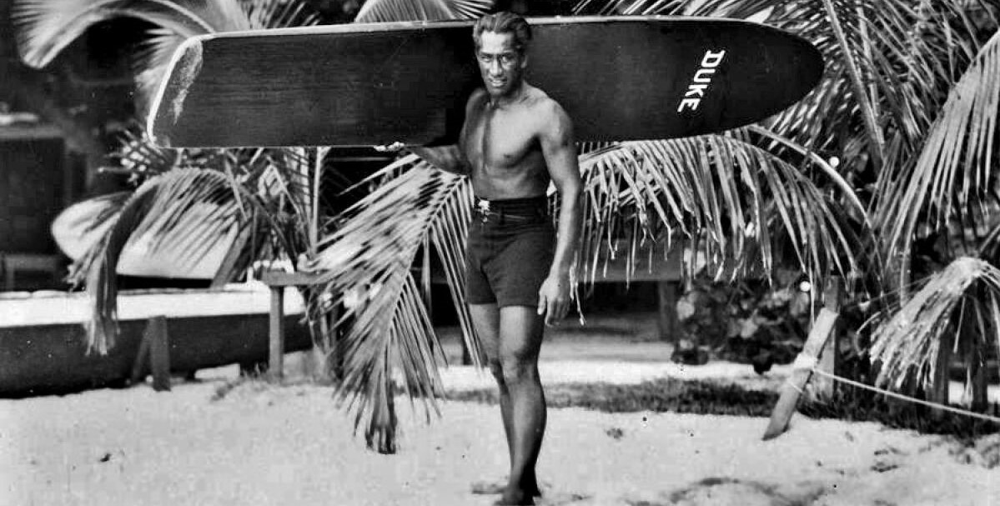
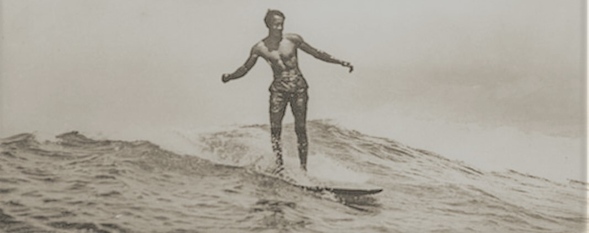
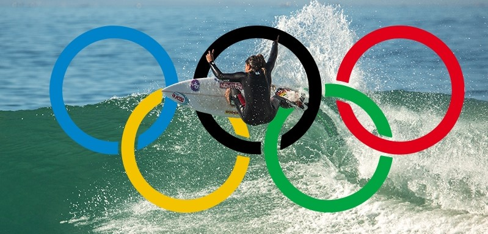
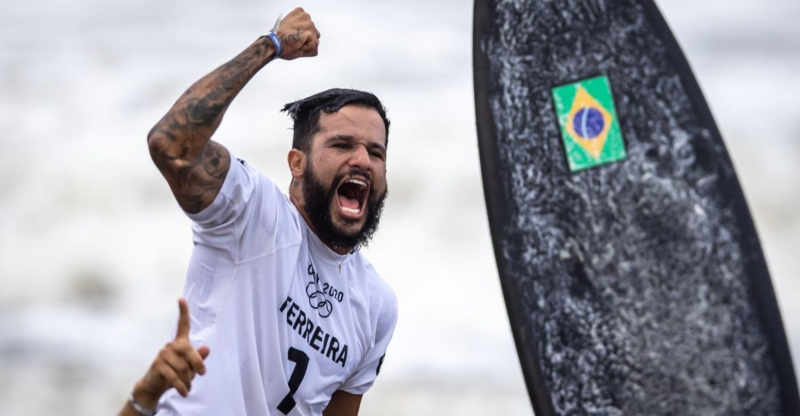
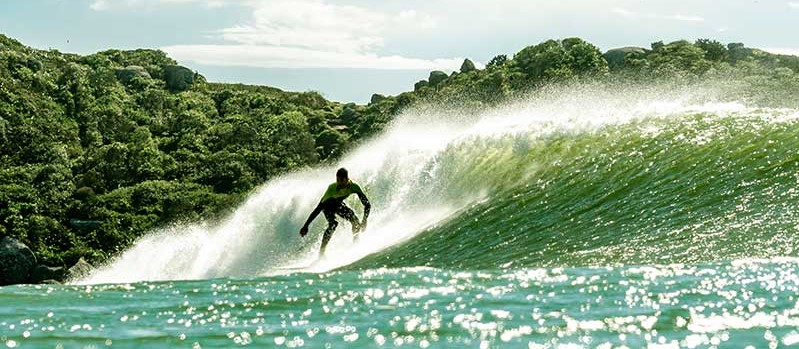
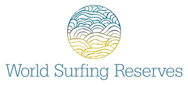

História do surf
As Origens Primitivas
As primeiras evidências do Surf remontam a povos polinésios, como os havaianos, samoanos e tahitianos, que possivelmente praticavam o Surf por volta de 1500 a.C. Para essas civilizações, o Surf não era apenas um esporte, mas uma parte intrínseca de suas tradições culturais e espirituais. As pranchas eram esculpidas à mão a partir de madeira de árvores nativas, e o Surf era frequentemente associado a rituais religiosos e festivais.Talvez ainda antes dos polinésios, no litoral do Peru, os povos antigos surfavam com uma espécie de canoa, ou prancha feita com junco, os famosos Caballitos de Totora. Muitos afirmam que esse é o primeiro registro de Surf que se conhece. O Surf continuou a evoluir com o avanço das tecnologias de pranchas e equipamentos. Pranchas mais curtas e ágeis permitiram manobras mais radicais, enquanto o uso do leash (uma corda que prende a prancha ao tornozelo do surfista) tornou a prática do Surf mais segura.


O Surf como Competição e Esporte Olímpico
As competições também se tornaram uma parte essencial da cultura do Surf, com o surgimento de circuitos profissionais e eventos de renome mundial, como o Championship Tour. O primeiro campeonato mundial de Surf com um circuito bem organizado ocorreu em 1976 e o australiano Peter Townend foi o primeiro campeão mundial. Em 1992, a ASP decidiu dividir o Circuito Mundial em duas divisões: WCT e WQS, e esse formato se mantém parecido até os dias de hoje.
Um momento marcante para o Surf foi sua inclusão nos Jogos Olímpicos de Verão em Tóquio 2020. Pela primeira vez, os melhores surfistas do mundo competiram nas ondas olímpicas, dando ao esporte uma visibilidade sem precedentes e aumentando ainda mais seu apelo global. E para melhorar ainda mais essa história, o primeiro ouro olímpico masculino no Surf foi para um Brasileiro: Ítalo Ferreira.


O Surf e o Meio Ambiente
Enquanto o Surf continuou a prosperar, os surfistas também se tornaram defensores apaixonados do meio ambiente. Com uma conexão íntima com o mar, eles testemunharam em primeira mão os impactos das mudanças climáticas e da poluição. Como resultado, muitos surfistas estão envolvidos em iniciativas de preservação costeira e na conscientização sobre questões ambientais. Inclusive existe desde 2009 a WSR (World Surfing Reserves - ou reserva mundial de Surf) que é uma ONG criada para preservar praias e meio ambientes ligados ao Surf no mundo inteiro: Saiba mais sobre -World Surfing Reserves


Da ancestralidade das ondas polinésias à energia do futuro,
a história do surf continua viva na praia de Intermares,
onde cada maré escreve um novo capítulo dessa paixão.